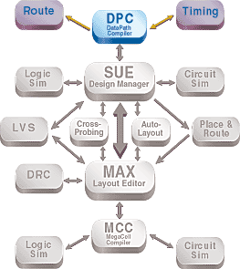
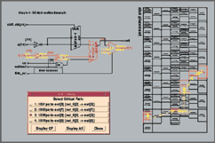
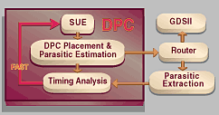
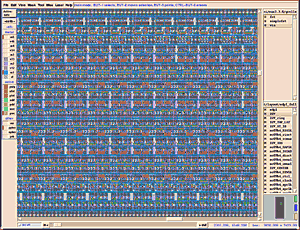

| Micro Magic Tools Overview |
| • SUE Design Manager |
| • DataPath Compiler |
| • MAX Layout Editor and MAX-LS Layout System |
| • MegaCell Compiler |
|
|
D A T A S H E E T

The DataPath compiler generates data paths from a schematic view and back-annotate accurate timing information onto the schematic in seconds. It can place custom-style "bit-slice" data paths, minimizing wire lengths for high performance, and can even include control logic, all using an existing standard cell library.
DataPath Compiler
The Tool for High-Performance Designs
The DataPath compiler is the tool of choice for designers of high-performance chips. It provides the performance of full-custom design, but with a much shorter design
cycle. Data paths designed with the DataPath compiler are three times faster and 40% smaller than synthesis and place and route, and they take one-tenth the effort of
full-custom design.
In deep sub micron design, wire length is the dominant factor affecting critical-path timing, and cell placement plays a major role in chip performance. With traditional tools, designers are at the mercy of automatic placement tools. The DataPath compiler provides fine control over placement, giving immediate timing feedback and allowing multiple what-if experiments to be performed. The DataPath compiler graphical display which back-annotates timing to the schematic, allows easy identification of timing problems and rapid iteration through potential solutions. The DataPath compiler is so fast that it can place and then time a 50,000-gate data path in about two minutes.
Useful Identification of Critical Paths| Figure 1. This example shows the placement generated for our sample 8-bit ALU. A critical path is highlighted in red and yellow. Timing for other nets is indicated in the menu. New nets can be selected and highlighted. |
 |
Optimization of Critical Paths
The DataPath compiler allows designers to easily specify and modify simple directives to produce speed-optimized layouts when doing data path design. These directives are
easily given and modified in the compiler. The placement of components on the schematic directs relative placement in the placement file.
| Figure 2. The DataPath compiler reduces (from days to minutes) the time required for placement and timing analysis. |
 |
Designers can place cells at specific row or column locations and can indicate empty space. The DataPath compiler automatically generates the row and column placement and the predicted wire lengths. Wire predictions can be used to drive timing analyzers including Pearl, PrimeTime, and PathMill.
The DataPath compiler reads the output from static timing analysis and displays the critical paths directly on the schematic. Designers can modify the placement to optimize critical paths or can add extra drivers to the critical path, all in the schematic. Designers can then iterate through the placement and timing until the timing criteria are satisfied. The iteration loop is fast and visual. When the design performance is satisfactory, the placement (DEF) file is passed to a routing tool. The routed result can then be read into the MAX layout editor to view and edit if necessary.
Design Flow| Figure 3. The DEF placement file is sent to a router. The resulting GDSII file can then be read into the MAX layout editor. |
 |
Features: